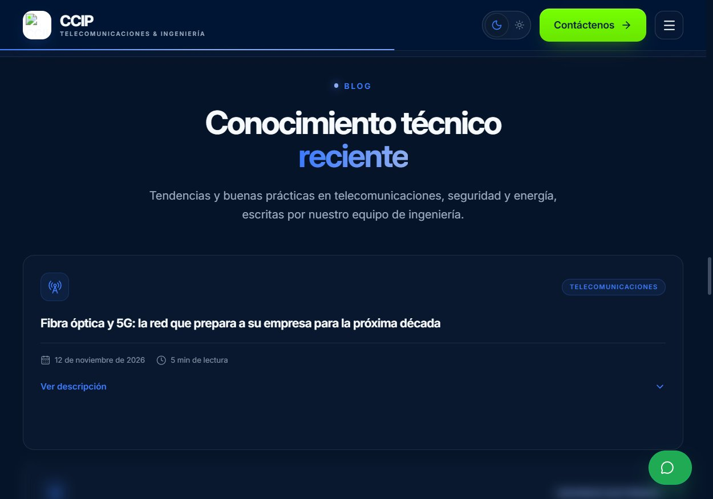
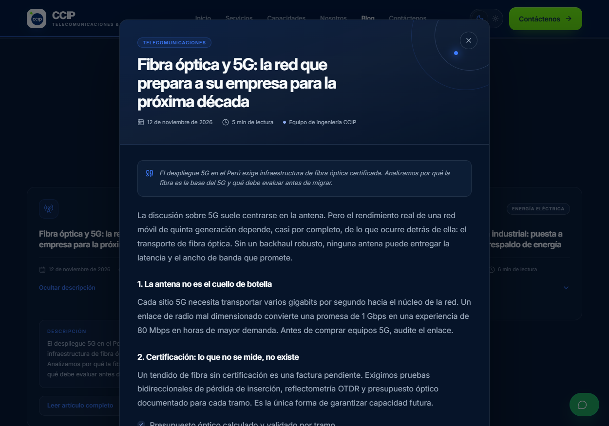
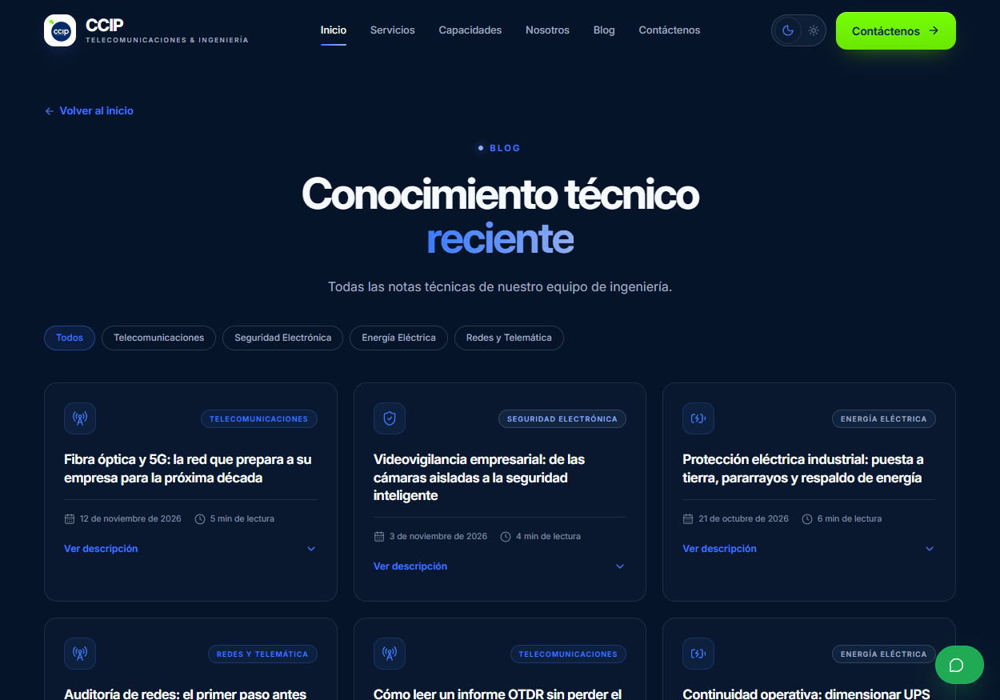

/blog
Referencia congelada: qa/baseline/. Nuevo baseline aprobado:
qa/baseline-v2/. Capturas con Playwright/Edge, viewport 1250×875,
reduced-motion: reduce, consola sin errores. El cambio autorizado es el enlace
“Ver más” junto a “Solicitar evaluación técnica” en la home y las rutas nuevas
/blog y /blog/[slug].
Invariantes verificados: hover del enlace en #f0cf00 (antes
rgb(61,123,255)), variable --hover-highlight: #f0cf00, 37 nodos
.reveal activos con opacidad 1, y SSR de contenido desde /api/**.



HTML aprobado original: baseline/aprobado-index.html. HTML SSR del nuevo baseline: baseline-v2/aprobado-index.html. Datos de captura: baseline-v2/errors.json.